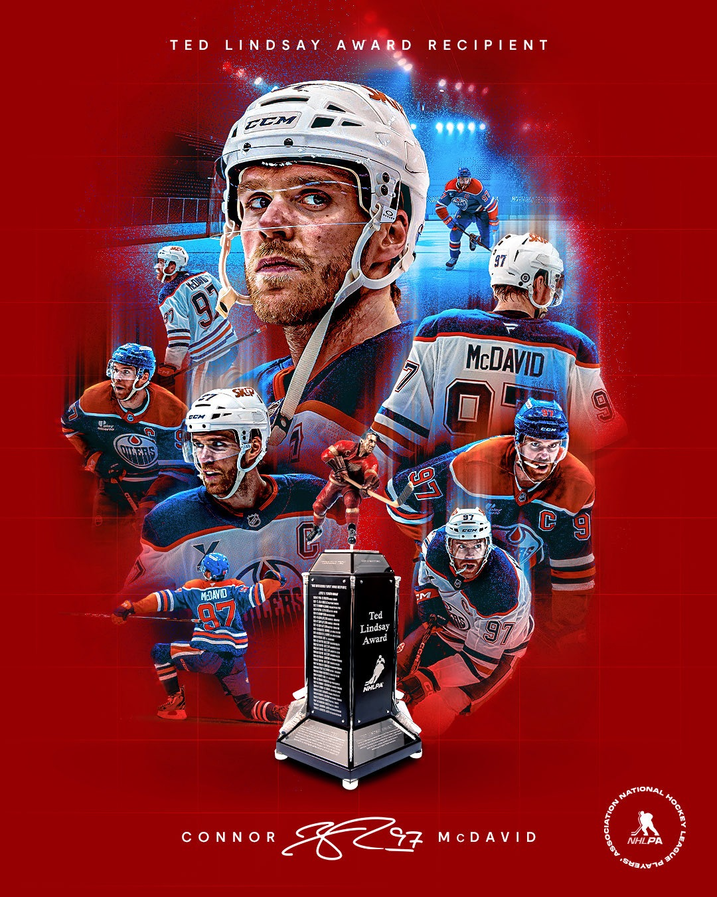

现役超级巨星
追星，从认识他们开始
找到你的主队核心，你就找到了冰球的入口。← 横向滑动查看更多 →
📅 数据统计截止至 2025-2026 赛季
97
中锋 · C

Connor McDavid
埃德蒙顿油人 · Edmonton Oilers
当代冰球之神
速度怪兽，联盟统治者。每次持球突破都像开了加速器的赛车。连续多届得分王，被球迷称为"外星人"。
2.0+场均得分（生涯平均）
8
左翼 · LW

Alex Ovechkin
华盛顿首都人 · Washington Capitals
NHL 历史进球王
他的"OV大力击弦"是冰球史上最标志性的射门动作。用大半个职业生涯的坚守书写了最伟大的传奇。
895职业生涯进球
🏆 历史性时刻：历史进球王。已正式超越韦恩·格雷茨基 (894球)，独享 NHL 历史进球总数第一人王座。
34
中锋 · C

Auston Matthews
多伦多枫叶 · Toronto Maple Leafs
顶级神射手
近年联盟最高效的纯射手之一。手腕抽射（Wrist Shot）出手极快角度极刁，是射门技术的教科书级范本。
70单赛季进球（2021-22）
29
中锋 · C

Nathan MacKinnon
科罗拉多雪崩 · Colorado Avalanche
全能攻守型核心
攻守俱佳的全能型球员，2022年率队夺得斯坦利杯。高速突破和传球视野均为联盟顶级，科罗拉多的绝对灵魂。
1402024 Hart Trophy MVP 得主
1
守门员 · G

Igor Shesterkin
纽约游骑兵 · New York Rangers
现役第一守门员
最具统治力的现役守门员。蝴蝶式扑救灵活，反应速度极快，能以一己之力带着普通球队杀入季后赛深处。
.940赛季最高扑救率
4
后卫 · D

Cale Makar
科罗拉多雪崩 · Colorado Avalanche
新生代最强攻守型后卫
重新定义后卫打法。像前锋一样参与进攻，像顶级后卫一样防守，加速滑行和射门技术让老球迷叹为观止。
1生涯场均得分 (历史后卫第一)
← 横向滑动浏览更多球星 →